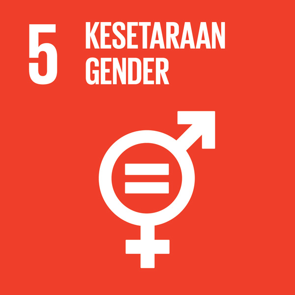
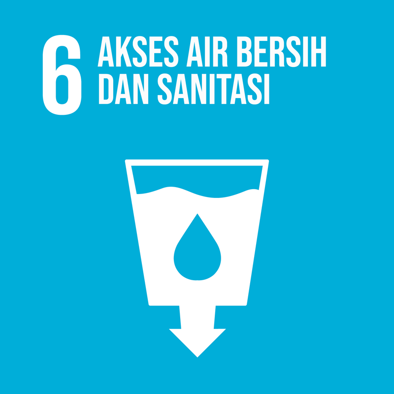
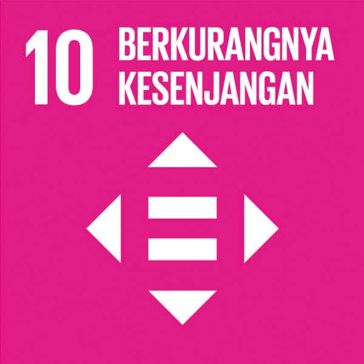

SDGs merupakan serangkaian tujuan yang ditetapkan oleh Perserikatan Bangsa-Bangsa (PBB), untuk mencapai kehidupan yang lebih baik dan berkelanjutan bagi seluruh masyarakat saat ini dan masa depan. Melalui kerja sama internasional dan upaya kolektif. SDGs dibentuk pada September 2015 dan sudah disepakati oleh 193 negara, termasuk Indonesia.
Terdapat 17 tujuan SDGs yaitu:

Mengakhiri kemiskinan dalam segala bentuk di manapun
1. Menghapus Kemiskinan
Fokus pada upaya pengentasan kemiskinan ekstrem dan pemberdayaan mereka yang hidup dalam kondisi rentan.

Menghilangkan kelaparan, mencapai ketahanan pangan dan gizi yang baik, serta meningkatkan pertanian berkelanjutan.
2. Mengakhiri Kelaparan
Fokus pada memastikan semua orang memiliki akses ke makanan yang cukup, aman, dan bergizi.

Menjamin kehidupan yang sehat dan meningkatkan kesejahteraan seluruh penduduk semua usia.
3. Kesehatan yang Baik dan Kesejahteraan
Fokus pada upaya untuk mengurangi angka kematian, mengendalikan penyebaran penyakit menular, serta meningkatkan akses ke pelayanan kesehatan yang terjangkau.

Menjamin kualitas pendidikan yang inklusif dan merata serta meningkatkan kesempatan belajar sepanjang hayat dan semua.
4. Pendidikan Bermutu
Fokus pada peningkatan kualitas pendidikan, pemberdayaan guru, dan penyediaan peluang pendidikan sepanjang hidup.
Mencapai kesetaraan gender dan memberdayakan kaum perempuan.
5. Kesehatan Gender
Penghapusan segala bentuk diskriminasi terhadap perempuan dan anak perempuan, serta memastikan partisipasi yang setara dalam semua bidang.
Menjamin ketersediaan serta pengelolaah air bersih dan sanitasi yang berkelanjutan untuk semua.
6. Akses Air Bersih dan Sanitasi
Fokus pada pengelolaan air yang berkelanjutan, pengendalian polusi air, dan pengurangan jumlah orang yang tidak memiliki akses ke fasilitas sanitasi yang layak.

Menjamin akses energi yang terjangkau, andal, berkelanjutan dan modern untuk semua.
7. Energi Bersih dan Terjangkau
Fokus pada promosi energi terbarukan dan efisiensi energi.

Meningkatkan pertumbuhan ekonomi yang inklusif dan bekelanjutan, kesempatan kerja yang produktif dan menyeluruh, serta pekerjaan yang layak unuk semua.
8. Pekerjaan Layak dan Pertumbuhan Ekonomi
Fokus pada pentingnya menciptakan peluang pekerjaan produktif dan kondisi kerja yang layak.

Membangun infrastruktur yang tangguh, meningkatkan industri dan berkelanjutan serta mendrong inovasi.
9. Industri, Inovasi dan Infrastruktur
Fokus pada pertumbuhan ekonomi inklusif melalui industrialisasi yang berkelanjutan.
Mengurangi kesenjangan intra dan antar negara.
10. Berkurangnya Kesenjangan
Fokus pada pemberdayaan kelompok-kelompok yang rentan dan pengurangan ketidaksetaraan dalam pendapatan.

Menjadikan kota dan permukiman influsif, aman, tangguh dan berkelanjutan.
11. Kota dan Komunitas yang Berkelanjutan
Fokus pada perencanaan tata kota yang baik, akses terhadap transportasi umum, serta perlindungan dan pemulihan warisan budaya.

Menjamin pola produksi dan konsumsi yang berkelanjutan.
12. Konsumsi dan Produksi yang Bertanggung Jawab
Fokus pada pentingnya efisiensi sumber daya, pengelolaan limbah yang tepat, dan pengembangan produk yang ramah lingkungan.
Mengambil tindakan cepat untuk mengatasi perubahan iklim dan dampaknya.
13. Penanganan Perubahan Iklim
Fokus pada pengurangan emisi gas rumah kaca, adaptasi terhadap perubahan iklim, dan peningkatan ketahanan terhadap bencana alam.
Melestarikan dan memanfaatkan secara berkelanjutan sumber data kelautan dan samudera untuk pembangunan berkelanjutan
14. Menjaga Ekosistem Lautan
Fokus pada perlindungan ekosistem laut, pengurangan polusi plastik, dan penanggulangan praktik perikanan yang merugikan.

Melindungi, merestorasi dan meningkatkan pemanfaatan berkelanjutan ekosistem daratan, mengelola hutan secara lestari, menghentikan penggurunan, memulihkan degradasi lahan, serta menggantikan kehilangan keanekaragaman hayat.
15. Menjaga Ekosistem Daratan
Fokus pada perlindungan ekosistem daratan dan pengendalian invasi spesies asing.

Menguatkan masyarakt yang inklusif dan damai untuk pembangunan berkelanjutan, menyediakan akses keadilan untuk semua, dan membangun kelembagaan yang efektif, akuntabel, dan inklusif di semua tingkatan.
16. Perdamaian, Keadilan dan Kelembagaan yang Kuat
Fokus pada pengurangan kekerasan, kesetaraan hukum, dan pemberantasan korupsi.

Menguatkan sarana pelasanaan dan merevitalisasi kemitraan global untuk pembangunan berkelanjutan.
17. Kementrian untuk Mencapai Tujuan
Fokus pada pengembangan kapasitas, transfer teknologi, dan dukungan keuangan untuk memastikan keberlanjutan upaya pembangunan.
Sumber:
https://untar.ac.id/2023/12/15/kenal-lebih-jauh-17-tujuan-sdgs/
https://sdgs.bappenas.go.id/
https://sdgs.un.org/goals
https://telkomuniversity.ac.id/mengetahui-17-tujuan-sdgs-dan-peran-aktif-telkom-university-dalam-pembangunan-keberlanjutan/